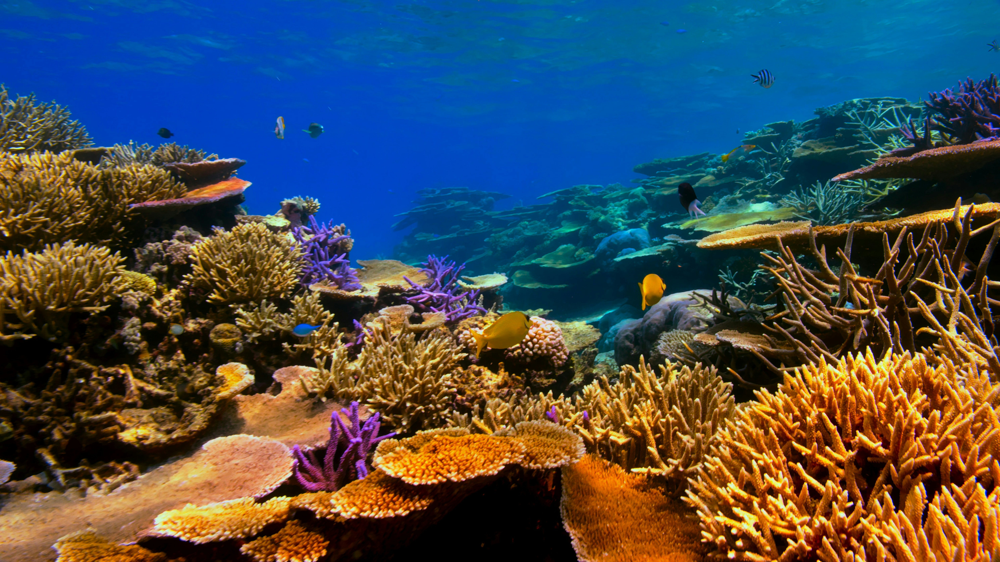
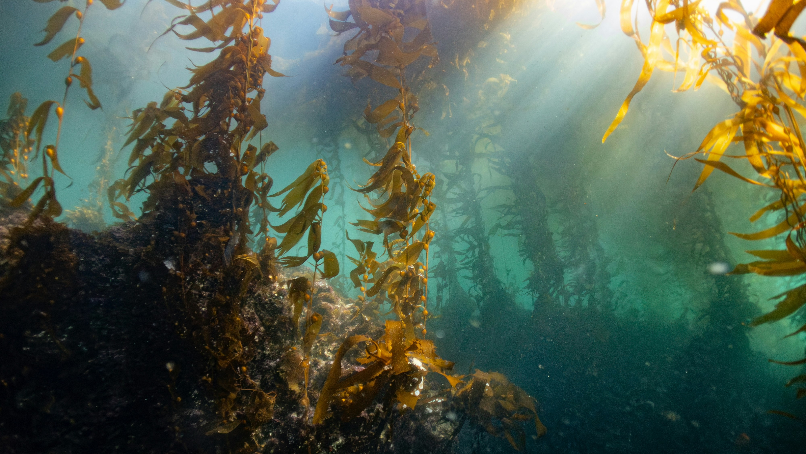
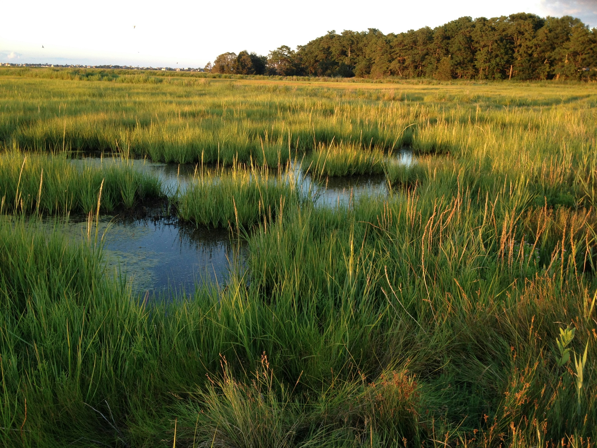
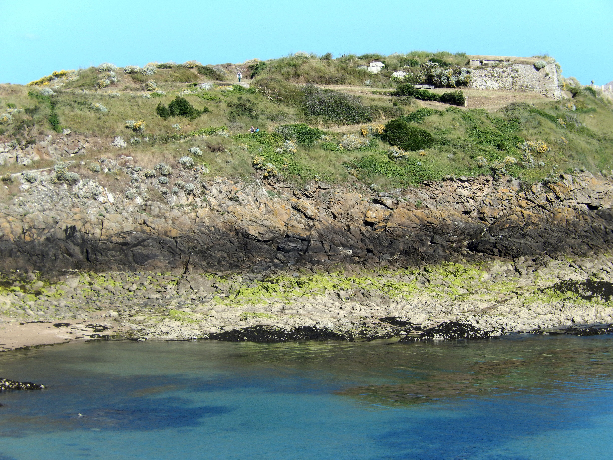
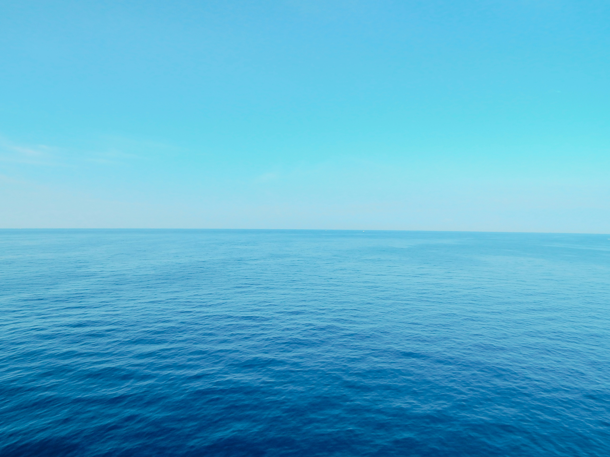
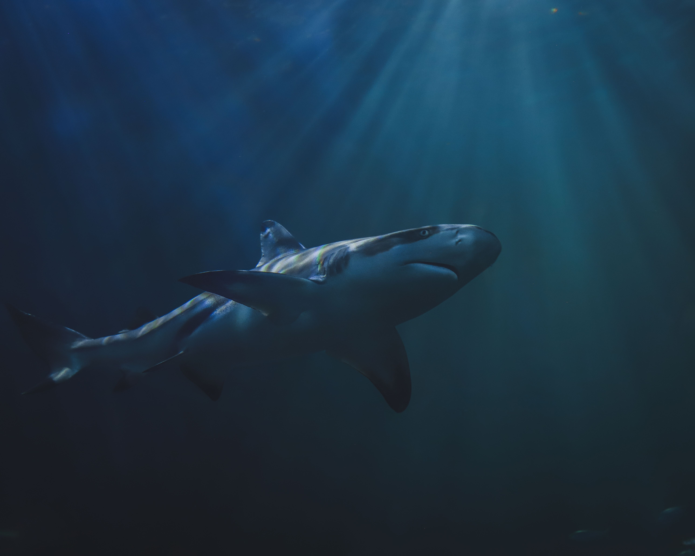

What is a Marine Ecosystem?
A marine ecosystem is a dynamic saltwater environment where living communities (fish, mammals, microbes) interact with non-living elements (salinity, sunlight, nutrients). Covering over 70% of the Earth's surface, these vast aquatic biomes drive global weather patterns, dictate water cycles, and form the biological baseline that makes terrestrial life possible. They include everything from coastal tidal mudflats to ultra-deep oceanic trenches.
Types of Marine Ecosystems
From sunlit coastal shallows down to absolute abyssal darkness, ocean life adapts to distinct environmental boundaries:

1. Coral Reefs
Coral reefs are underwater ecosystems built by tiny coral animals called coral polyps. Although they cover less than 0.1% of the ocean floor, they support about 25% of all marine species, earning them the nickname "rainforests of the sea."
Key Species: Hard corals, clownfish, parrotfish, reef sharks.

2. Mangroves
Mangroves are salt-tolerant forests found along tropical and subtropical coastlines. Their tangled roots protect coastlines from erosion, improve water quality, and provide safe nursery habitats for many young marine animals.
Key Species: Red mangroves, mudskippers, crabs, juvenile fish.

3. Seagrass Meadows
Seagrass meadows are underwater fields of flowering plants that grow in shallow coastal waters. They stabilize the seabed, improve water quality, store large amounts of carbon, and provide food and shelter for many marine animals.
Key Species: Dugongs, Green Sea Turtles, Seahorses, Pipefish.

4. Kelp Forests
Kelp forests are underwater ecosystems formed by giant brown algae called kelp that grow in cool, nutrient-rich coastal waters. They provide food, shelter, and breeding grounds for a wide variety of marine life.
Key Species: Giant kelp, sea otters, sea urchins, kelp bass.

5. Estuaries
Estuaries are places where freshwater from rivers mixes with seawater. These nutrient-rich ecosystems are among the most productive in the world and serve as important breeding and nursery areas for many fish, shellfish, and birds.
Key Species: Oysters, mud crabs, herons, juvenile fish.

6. Lagoons
Lagoons are shallow coastal bodies of saltwater separated from the open ocean by coral reefs, sandbars, or barrier islands. Their calm waters provide habitats for many fish, seagrasses, and other marine life.
Key Species: Stingrays, seagrasses, seahorses, juvenile fish.

7. Salt Marshes
Salt marshes are coastal wetlands that are regularly flooded by seawater during high tides. They help reduce coastal erosion, filter pollutants, store carbon, and provide shelter for many animals.
Key Species: Cordgrass, fiddler crabs, shrimp, herons.

8. Intertidal Zones
Intertidal zones are coastal areas between the high and low tide marks. Organisms living here must survive changing tides, crashing waves, and varying temperatures.
Key Species: Barnacles, mussels, sea stars, crabs.

9. Open Ocean (Pelagic Zone)
The open ocean is the vast area beyond the coast and is the largest marine ecosystem on Earth. Sunlight reaches the upper layers, where microscopic phytoplankton produce oxygen and form the base of the marine food web.
Key Species: Phytoplankton, tuna, dolphins, whale sharks.

10. Deep Sea and Sea Floor
The deep sea begins below about 200 metres, where sunlight becomes very limited or disappears completely. It is extremely cold, dark, and under immense pressure, yet many specially adapted organisms live there.
Key Species: Anglerfish, giant squid, sea cucumbers, tube worms.

11. Polar Oceans
Polar oceans are the cold waters surrounding the Arctic and Antarctica. Sea ice, cold temperatures, and seasonal sunlight create unique ecosystems that support many specially adapted marine animals.
Key Species: Antarctic krill, penguins, seals, polar bears (Arctic only).
Why Marine Ecosystems Matters
Did You Know?
Although the ocean covers 71% of Earth's surface, scientists estimate that over 80% of it remains unexplored. Every new discovery helps us better understand and protect marine life.
- 🌡️ Climate Regulation: The ocean absorbs about 90% of the excess heat caused by global warming and stores large amounts of carbon dioxide. This helps regulate Earth's climate and reduces the impact of climate change.
- 🌬️ Oxygen Production: Tiny marine plants called phytoplankton produce around 50% of the oxygen we breathe. Every second breath you take is thanks to the ocean.
- 🍽️ Food & Livelihoods: More than 3 billion people rely on seafood as a major source of protein. Healthy oceans also support millions of jobs through fishing, tourism, shipping, and aquaculture.
- 🛡️ Coastal Protection: Coral reefs, mangroves, and seagrass meadows act as natural barriers. They reduce wave energy, limit coastal erosion, and help protect communities from storms and flooding.
- 🐠 Incredible Biodiversity: The ocean is home to over 240,000 known marine species, and scientists believe millions more are still undiscovered. Every species plays an important role in keeping marine ecosystems healthy.
- 💊 Medicine from the Sea: Many marine organisms contain unique chemicals that scientists use to develop new medicines. Research from the ocean has contributed to treatments for cancer, pain relief, and bacterial infections.
Threats They Face
Our oceans are facing growing threats caused by human activities. Pollution, climate change, overfishing, and habitat destruction are damaging marine ecosystems and putting countless species at risk. Learning about these threats is the first step toward protecting our oceans.
Did you know?
The Ocean Under Pressure
Scientists estimate that less than 3% of the world's oceans are effectively protected, while many marine habitats continue to face pollution, overfishing, and climate change. Every year, these threats make it harder for marine life to survive and recover.
Human Caused Threats
🏝️ Habitat Destruction
Coastal development, dredging, and land clearing destroy important habitats such as coral reefs, mangroves, and seagrass meadows. These ecosystems provide food, shelter, and breeding grounds for countless marine species. When they are damaged or removed, many animals struggle to survive, causing a loss of biodiversity.
🎣 Overfishing
Overfishing happens when fish are caught faster than their populations can recover. As numbers decrease, many species cannot reproduce quickly enough, making some become endangered. Fishing methods can also accidentally catch other animals, known as bycatch, including turtles, dolphins, and sharks, disrupting the entire marine food web.
🦈 Food Chain Disruption
Large predators like sharks help keep ocean ecosystems balanced. When their numbers decline because of overfishing, smaller animals increase rapidly and upset the food chain. This imbalance affects many other species, making it harder for the entire ecosystem to stay healthy.
🗑️ Plastic Pollution
Plastic pollution is one of the biggest threats to the ocean. Items like single-use plastics, bottles, bags, and abandoned fishing nets can trap or injure marine animals. Tiny pieces called microplastics are eaten by fish and other sea creatures, entering the food chain and affecting both wildlife and humans.
🌡️ Climate Change
Climate change is causing ocean temperatures to rise, leading to coral bleaching and the loss of coral reefs. Melting ice also raises sea levels, while ocean acidification makes it difficult for corals and shell-forming animals to survive. These changes damage marine habitats and force many species to move or die.
🛢️ Oil Spills
Oil spills release toxic chemicals into the ocean, covering birds' feathers and mammals' fur, making it difficult for them to fly, swim, or stay warm. Oil also blocks sunlight and reduces oxygen in the water, harming fish, coral reefs, and other marine life. Some ecosystems may take decades to recover.
Effects on Marine Life
Human activities are changing ocean ecosystems and making it harder for marine animals to survive. These impacts affect everything from individual species to entire food webs.
- 🐠 Habitat Loss: When coral reefs, mangroves, and seagrass meadows are damaged, marine animals lose their homes, breeding grounds, and places to find food. This can cause populations to decline.
- 📉 Population Decline: Overfishing, pollution, and climate change reduce the number of marine animals. Some species become endangered or even face extinction.
- ⚖️ Food Chain Disruption: The loss of key species, such as sharks and large fish, upsets the balance of the marine food web. This affects many other animals that depend on healthy ecosystems.
- 🌊 Ecosystem Damage: Pollution, rising ocean temperatures, and ocean acidification weaken marine ecosystems. Coral reefs bleach, biodiversity decreases, and oceans become less able to support marine life.
The Solution
Together, we can protect our oceans and create a healthier future for marine life.
Why It Matters
Healthy oceans are essential for life on Earth. They produce about 50% of the oxygen we breathe, regulate the global climate, provide food and livelihoods for billions of people, and support countless marine species. By protecting our oceans today, we help ensure a healthier planet for both wildlife and future generations.
How You Can Help
- ♻️ Reduce Plastic Waste: Choose reusable bottles, bags, and containers instead of single-use plastics. Properly dispose of rubbish and recycle whenever possible to prevent plastic from entering rivers and oceans.
- 🧹 Join Beach or River Clean-ups: Take part in local clean-up events or organise one with your school or community. Removing litter helps protect marine animals from becoming trapped or accidentally eating plastic.
- 🐟 Choose Sustainable Seafood: Support sustainable fisheries by choosing seafood that is responsibly sourced. This helps prevent overfishing and allows fish populations to recover.
- 💡 Reduce Your Carbon Footprint: Save electricity, use public transport, walk, or cycle when possible. Reducing greenhouse gas emissions helps slow climate change, which protects coral reefs and other marine ecosystems.
- 📢 Spread Awareness: Share what you've learned with your family, friends, and classmates. Encouraging others to care about the ocean can inspire more people to take action.
- 🌊 Support Marine Conservation: Support organisations and projects that protect marine wildlife and restore habitats. You can donate, volunteer, or participate in conservation activities to make a positive impact.